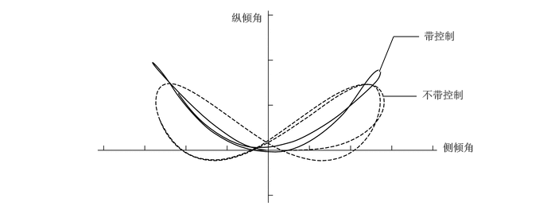
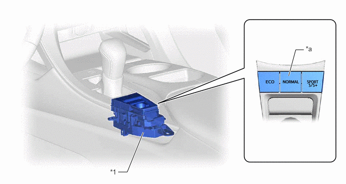

NM35K0CC
_53
悬架
_079780
悬架控制
_0387102
自适应可调悬架系统
CO
控制
F
悬架控制 自适应可调悬架系统 控制 自适应可调悬架控制
主要零部件的功能
| 零部件 | 功能 | |
|---|---|---|
| 减振器控制 ECU（带内置式加速度传感器） | ·
根据各种传感器和开关提供的信号估算车辆状态，并将控制信号输出至减振器控制执行器。 ·
检测车身的垂直加速率。 |
|
| 减振器总成 | 减振器控制执行器 | 改变减振器总成的减振力。 |
| 行驶辅助 ECU 总成 | 向减振器控制 ECU 发出减振力控制请求。 | |
| 制动执行器总成 | 防滑控制 ECU | 向减振器控制 ECU 发送车轮转速信号、目标加速和减速信号、减振力协同控制信号和制动踏板踩下信号。 |
| ECM | 向防滑控制 ECU 发送目标驱动力信号。 | |
| 中央网关 ECU（网络网关 ECU） | 转发并传输各 CAN 通信数据信号。 | |
| 加速度传感器总成 | 检测车身的垂直加速率。 | |
| 转向传感器 | 检测方向盘的转动方向和角度。
（有关详情，请参考转向传感器。点击此处 (  201903,999999,_54,_079357,_0384807,DE,NM100000001GICN)） 201903,999999,_54,_079357,_0384807,DE,NM100000001GICN)）
|
|
| 空气囊 ECU 总成 | 横摆率传感器 | 检测车辆的纵向及横向加速度和减速度。 |
| 加速度传感器 | ||
| 转速传感器 | 检测车轮转速。 | |
| 刹车灯开关总成 | 检测踩下制动踏板的时间。 | |
| 电动驻车制动开关总成 | 行驶模式选择开关 | 切换行驶模式。 |
| 组合仪表总成 | 行驶模式指示灯 | 显示行驶模式选择的选择状态。 |
系统控制
a.
减振器控制 ECU 接收来自传感器和开关的信号以控制减振器控制执行器。ECU 根据驾驶条件和路况利用这些信号优化控制减振力。
b.
通常，减振器的减振力越小，吸收的崎岖道路的振动就越多，从而提高乘坐舒适性。但是，高速行驶、制动或转弯时车辆运动增大，在不平稳路面上行驶或驶过高度差较大的道路时振动抑制效果较差。因此，在不平整道路上行驶时，系统降低减振力以提高乘坐舒适性，存在较大车辆运动（簧上共振）时，系统根据路面状态增加减振力。同时，系统根据行驶时的操作增加减振力，以确保转弯时的行驶稳定性（平稳行驶）。
c.
AVS 执行以下控制：
| 控制 | 概要 |
|---|---|
| 车速感应控制 | 系统根据车速控制减振力，以实现低速时的乘坐舒适性和高速时的稳定性（平稳行驶）。 |
| 防俯冲控制 | 制动期间，使减振力稳定以抑制车身俯冲，从而确保卓越的稳定性和可控性。 |
| 防下坐控制 | 加速期间，使减振力稳定以使车身姿势的变化最小。 |
| 侧倾姿势控制 | 系统控制减振力以在转弯期间优化车辆姿势，从而实现符合人类审美的车姿和充满驾驶乐趣的操纵感。 |
| 反冲控制（簧上速度比例控制） | 系统根据加速度传感器信号检测由于来自路面的输入在举升、侧倾和纵倾方向发生的振动。系统根据加速度传感器信号检测减振器的伸展和收缩方向。因此，对 4 个车轮的减振力进行细粒度控制以自然抑制较大的车辆运动，从而实现愉悦的乘坐舒适性和卓越的平稳感。 |
| 颠簸程度感应控制 | 系统根据加速度传感器信号检测到在不平整道路上行驶时产生的令人不悦的振动，并执行控制以减小减振力。因此，减少不平整感来确保乘坐舒适性。 |
| 簧下减振控制 | 系统根据防滑控制 ECU 信号检测簧下共振并进行控制以增大减振力。因此，抑制簧下共振（咔嗒声）以确保轮胎的路面接触性能。 |
| VSC 操作控制 | 系统根据车辆是否横向滑动来适当控制减振力并根据来自防滑控制 ECU 的减振力协同控制信号更改路面防滑性，从而提高 VSC 的效率。 |
| 碰撞预测系统操作控制 | 行驶辅助 ECU 总成判定可能发生碰撞时，系统根据减振力协同控制信号适当控制减振器的减振力。有关详情，请参考碰撞预测系统章节。 |
| 减振模式选择 | 行驶模式选择可使驾驶员从 2 种模式中选择所需减振力。 |
d.
侧倾姿势控制
i.
根据转向传感器和减速度传感器信号，控制各车轮的减振力以优化转向时的车辆姿势状况。
ii.
控制减振力以减少侧倾角和纵倾角之间的相位差，从而实现与人的感觉相适应的车辆姿势与舒适的转向。

4.969,0.938 5.156,0.479
5.156,0.479 5.49,0.479
true
5.031,1.26 5.458,1.26
true
3.031,0.146 4.729,0.354
1.688,0.198
10
false
纵倾角
5.552,0.385 6.354,0.594
0.792,0.198
10
false
带控制
5.531,1.156 6.552,1.365
1.01,0.198
10
false
不带控制
5.802,1.844 6.823,2.052
1.01,0.198
10
false
侧倾角
e.
模式切换功能
i.
该功能在行驶模式选择操作所选择的 2 种模式之间自动切换减振力控制模式：“SPORT”和“NORMAL”。
| 行驶模式 | 减振力控制模式 | 概要 |
|---|---|---|
| NORMAL | NORMAL | 实现高度转向响应性、平稳感、稳定感和乘坐舒适性之间的良好平衡。 |
| ECO | ||
| SPORT S | ||
| SPORT S+ | SPORT | 主要使用硬减振力范围进一步强调转向响应性、平稳感和稳定性，从而实现运动驾驶。 |

2.448,3.563 2.635,3.563
2.635,3.563 2.969,2.74
true
5.979,1.573 6.125,1.031
6.125,1.031 6.292,1.031
true
2.281,3.479 2.594,3.635
0.313,0.156
10
false
*1
6.333,0.927 6.646,1.156
0.313,0.229
10
false
*a
| *1 | 电动驻车制动开关总成 | - | - |
| *a | 行驶模式选择开关 | - | - |
失效保护
a.
如果 AVS 发生故障，则减振器控制 ECU 禁止减振力控制。
诊断
a.
减振器控制 ECU 也将存储诊断故障码 (DTC)。通过使用 Global TechStream (GTS) 可读取 DTC。有关详情，请参考修理手册。